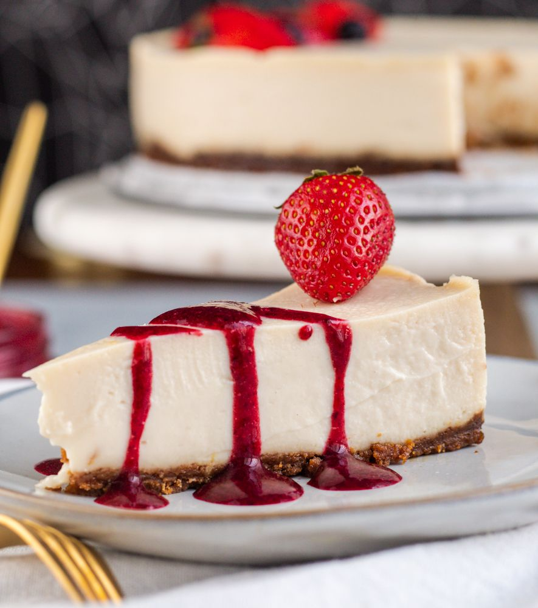

Healthy Treats — Placer sensorial y bienestar nutricional
Redistribuimos la repostería saludable: recetas que evocan tradición, creadas con ingredientes autóctonos de la sierra y la selva peruana, y elaboradas bajo procesos rigurosos para garantizar frescura y pureza.
Nuestra esencia
Healthy Treats redefine la repostería saludable, fusionando placer y nutrición en cada creación. Seleccionamos frutas, granos y endulzantes naturales de la sierra y la selva, transformándolos en postres que cuidan el cuerpo sin perder lujo ni textura.
- Ingredientes autóctonos: cacao nativo, lúcuma, camu camu, quinua y más.
- Sin aditivos: elaboraciones libres de conservantes y sabores artificiales.
- Calidad supervisada: procesos de producción controlados para garantizar frescura y seguridad.

NUESTROS VALORES
Salud
Opciones sin lactosa, bajas en azúcar e integrales.
Artesanía
Cada pieza recibe atención y tiempo.
Comunidad
Formación y trabajo local sostenible.